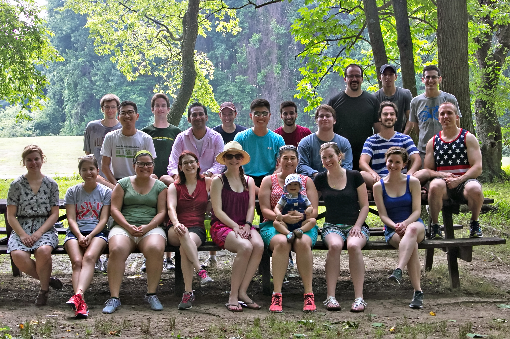

Hello!
My name is Michael Shin. I am a New Yorker who is a current fourth year undergraduate at the University of Pennsylvania, majoring in biochemistry and submatriculating in chemistry.
I built this site as a platform to write about a wide breadth of topics that I find interesting. I'll write about anything and everything! Hopefully, you find the topics interesting as well.
I am currently conducting biochemical research in the Marmorstein lab at Penn. Check out some of what I have worked on here!
When I am not in lab, I enjoy running, reading, and playing the clarinet and piano. I also love travelling and experiencing different cultures.

I aspire to one day become a physician who is able to build strong relationships with patients and the public through clear communication.
I hope this blog will give me more practice in conveying diverse contents clearly. Any sort of feedback is welcome!